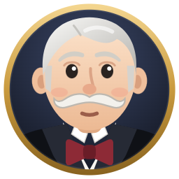

General
Keyboard shortcuts
Appearance
Theme
The folder holds a copy of each built-in theme. Edit a copy and Wilfred uses your version as you save; copy one under a new name and it's a theme of your own.
Notifications
Your system's own, shown on this computer only. Click one to open the session.
On a Mac, notifications arrive as from "Electron", since Wilfred isn't a packaged app; the first one asks you to allow them.
Do not disturb
Today
By project
| Project | Worked | Waited for you | Sessions | Turns |
|---|
Sessions
| Session | Worked | Waited for you | Turns | At API prices |
|---|
Wilfred keeps a journal per day in his settings folder, for 30 days, and only while he runs: time asleep isn't counted. Costs are what the sessions would have cost at API prices, from Claude Code's own figures.
Privacy
- Reads the Claude app's session files and Claude Code's transcripts. Writes only inside its own settings folder: the settings, the theme copies, and a journal of each day (titles, projects, times and counts).
- Outside that folder, only what you switch on, removed when you switch it off: the start-at-login entry, the app-menu entry on Linux, and on Windows a Start Menu entry for Wilfred while notifications are on, so that they carry his name. (Electron itself records a notification activator id in the registry the first time one is sent; Wilfred keeps to that one id, and doesn't remove the record. For a downloaded Wilfred.exe, Electron writes the Start Menu entry as well, and it stays.)
- Changes nothing in Claude: no hooks, no edits to its settings.
- Notifications are off until you switch them on, and your system's own, on this computer. The "Copy" items put text on your clipboard, on your click.
- Has no dependencies at run time but Electron itself, pinned to an exact version. A check in the repository fails any change that adds network code.

Wilfred
An always-on-top butler who tells you, at a glance, what every Claude session is doing, and which one needs you.
An unofficial side project, not affiliated with or endorsed by Anthropic. Open source under the MIT licence.
Made by ArduusLabs.